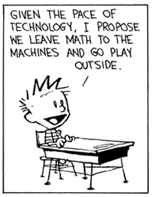

Educational Technology
September 23, 2016
.
As a teacher, and especially as a Learning Specialist, I was often asked "What do you think about technology in education?" Not surprisingly, I have strong thoughts on the topic. I don't like this question, and some of you aren't going to like my answer.
.
The question bugs me because it's entirely too broad. It's like saying "What do you think about books in education?" My first instinct - "Books? Books are great!" But some books are considerably better than other books depending on the goal of the lesson. There are really high quality books and really poorly written books. Same with tech. There are really high-quality edtech resources and really awful stuff out there.
.
The broad question of the influence of technology in education also annoys me because it immediately begs another question: Who are we talking about? Students? Teachers? Parents? Kindergarteners? College sophomores? There are books that are appropriate for second graders and books that appropriate for high school students. Same for tech. From my anecdotal observation, five-year-olds with iPads are more like zombies than engaged learners. High-quality tech has to be developmentally appropriate to be value added, and the conversation about technology in education has to include tech-users beyond students.
.
So, What do I think about technology in education? Well, it depends on the technology and it depends on its purpose. Technology is a tool- like a book or a pencil - and it's how teachers and students use it that matters. The skill is finding the best tool for the goal. Technology is not a panacea nor a replacement for a caring, supportive, observant teacher. Nor is it a replacement for exploring the natural world, which I think is currently devalued in the status quo American educational system (but, I'll save that for another post...). That being said, I absolutely think technology can positively impact education.
.
You might be thinking "how wishy washy", "it depends" is such a cop out answer. Well, stay tuned for upcoming edtech reviews where I discuss specific products intended for specific audiences. In the meantime, take a look at Edsurge - my favorite source for edtech news.